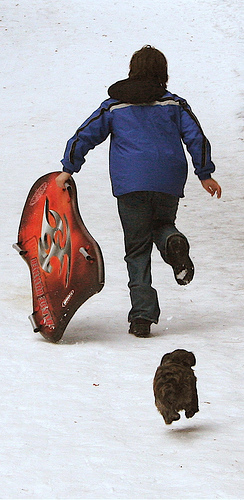
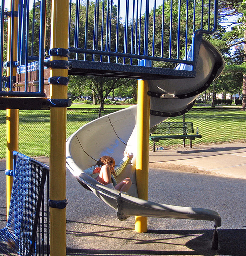
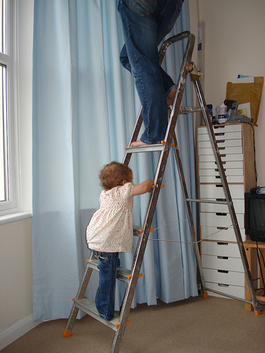
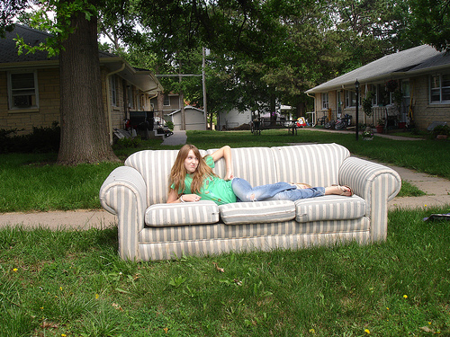
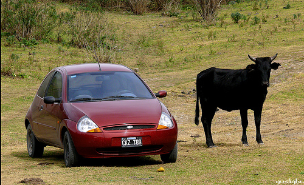
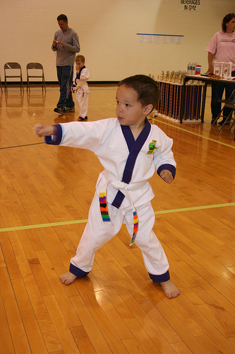
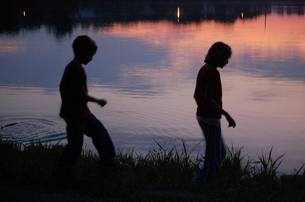

Towards Practical and Efficient Image-to-Speech Captioning
with Vision-Language Pre-training and Multi-modal Tokens
Minsu Kim1, Jeongsoo Choi1, Soumi Maiti2, Jeong Hun Yeo1, Shinji Watanabe2, Yong Man Ro1
1 School of Electrical Engineering, KAIST, South Korea
2 Language Technologies Institute, Carnegie Mellon University, USA

<Samples from the COCO captioning dataset>
*SAT-VQ3-FT used ASR model trained on reconstructed audio on their speech features, so some unclear words are calibrated by the ASR model.
Ours are decoded with greedy decoding and transcribed by using an off-the-shelf ASR model. https://huggingface.co/facebook/wav2vec2-large-960h-lv60-self
| Image ID | Image | SAT-VQ3-FT | Ours | Ours (Image Unit) |
|---|---|---|---|---|
| 155 |  |
Generated Speech: |
Generated Speech: |
Generated Speech: |
| ASR Transcription: *a small airplane sitting on the grass |
ASR Transcription: an airplane is parked on the grass |
ASR Transcription: a blue and yellow plan with colorful full air plane |
||
| 1686 |  |
Generated Speech: |
Generated Speech: |
Generated Speech: |
| ASR Transcription: *a man riding skis down a snowy slope |
ASR Transcription: a woman is going down a snowy slope |
ASR Transcription: a woman is skeeing down a snow covered slope |
||
| 3233 |  |
Generated Speech: |
Generated Speech: |
Generated Speech: |
| ASR Transcription: *a plastic tray with fruit sitting on top |
ASR Transcription: a plate topped with a bejes ennable of food |
ASR Transcription: a plate of food is on a tray and a sandwich |
||
| 4882 |  |
Generated Speech: |
Generated Speech: |
Generated Speech: |
| ASR Transcription: *a man sitting at a table eating pizza |
ASR Transcription: a man taking a picture of a piza on a table |
ASR Transcription: a person taking a picture of a piza |
||
| 6515 |  |
Generated Speech: |
Generated Speech: |
Generated Speech: |
| ASR Transcription: *a parking meter on the side of the road |
ASR Transcription: a parking meeter sitting on a street |
ASR Transcription: a parking meter is on a city street |
||
| 8309 |  |
Generated Speech: |
Generated Speech: |
Generated Speech: |
| ASR Transcription: *a couple of cars sitting on the side of a street |
ASR Transcription: a red motor cycle parked in a parking lot |
ASR Transcription: a busy street with cars and cars on it |
||
| 11809 |  |
Generated Speech: |
Generated Speech: |
Generated Speech: |
| ASR Transcription: *a man standing in the grass with a ball |
ASR Transcription: a black and white dog jumping over a frispy |
ASR Transcription: a man is leaping up into the air on a field |
||
| 13471 |  |
Generated Speech: |
Generated Speech: |
Generated Speech: |
| ASR Transcription: *a man sitting on a bench on the beach |
ASR Transcription: an old photo of a couple of couple on a bench |
ASR Transcription: two people sitting on a bench on a bench |
||
| 15061 |  |
Generated Speech: |
Generated Speech: |
Generated Speech: |
| ASR Transcription: *a man riding a wave on a surfboard |
ASR Transcription: a surfer riding a wave on a surfboard |
ASR Transcription: a man on a surf board writing a waf |
||
| 16622 |  |
Generated Speech: |
Generated Speech: |
Generated Speech: |
| ASR Transcription: *a street sign and a street sign |
ASR Transcription: i street sign ony wouldn't post it ony sign |
ASR Transcription: a black and white photo of a street sign in a field |
||
| 18302 |  |
Generated Speech: |
Generated Speech: |
Generated Speech: |
| ASR Transcription: *a man is standing on a tennis court |
ASR Transcription: a man in a black shirt is playing tennis |
ASR Transcription: a man in a black short swinging a racket on a cord |
||
| 19877 |  |
Generated Speech: |
Generated Speech: |
Generated Speech: |
| ASR Transcription: *a large body of water with boats sitting on the water |
ASR Transcription: a boat in a river with buildings in the background |
ASR Transcription: a body of water with boats in the background |
||
| 21549 |  |
Generated Speech: |
Generated Speech: |
Generated Speech: |
| ASR Transcription: *a small kitchen with a red in and in |
ASR Transcription: a kitchen sink in a counter with a ball of wine |
ASR Transcription: a red and white refrigerator in a kitchen |
||
| 23024 |  |
Generated Speech: |
Generated Speech: |
Generated Speech: |
| ASR Transcription: *a dog walking in a dog holding a yellow frisbee |
ASR Transcription: a brown and white dog holding a frisby in his mouth |
ASR Transcription: a small dog is holding a frisby in its mouth |
||
| 24752 |  |
Generated Speech: |
Generated Speech: |
Generated Speech: |
| ASR Transcription: *a large red bus on the side of the road |
ASR Transcription: a small bus is going down a street |
ASR Transcription: a bus parked on a city street |
||
| 26030 |  |
Generated Speech: |
Generated Speech: |
Generated Speech: |
| ASR Transcription: *a couple of cows standing in the grass |
ASR Transcription: a brown cow with a cow and a cow |
ASR Transcription: a baby cows and a babyby cow |
||
| 26166 |  |
Generated Speech: |
Generated Speech: |
Generated Speech: |
| ASR Transcription: *a man standing next to a white frisbee |
ASR Transcription: a man holding a frisby in his hand |
ASR Transcription: a woman is holding a white frisby in his hands |
||
| 27582 |  |
Generated Speech: |
Generated Speech: |
Generated Speech: |
| ASR Transcription: *a large cat sitting on a couch |
ASR Transcription: an orange cat plays with ta cat on the floor |
ASR Transcription: an orange cat playing with a person's head |
||
| 29172 |  |
Generated Speech: |
Generated Speech: |
Generated Speech: |
| ASR Transcription: *the large brown bears in the water |
ASR Transcription: a polar bear is playing with the ball in his ball |
ASR Transcription: two polar bears in the water with its back |
||
| 30773 |  |
Generated Speech: |
Generated Speech: |
Generated Speech: |
| ASR Transcription: *a bike parked on the side of a city street |
ASR Transcription: a bicycle parked on a sidewalk in a road |
ASR Transcription: a bicycle is parked on the side of the street |
<Samples from the Flickr8k captioning dataset>
| Image ID | Image | Ours | Ours (Image Unit) |
|---|---|---|---|
| 7254 |  | Generated Speech: |
Generated Speech: |
| ASR Transcription: a person running together in the snow |
ASR Transcription: a person snow boarding on a snowy surface |
||
| 7428 | Generated Speech: |
Generated Speech: |
|
| ASR Transcription: a black and brown dog walking on a long tree branch in the water |
ASR Transcription: a man is walking on a bench in the water |
||
| 7495 |  | Generated Speech: |
Generated Speech: |
| ASR Transcription: a girl is riding on a slide slide in a park |
ASR Transcription: a baker sitting on a city street |
||
| 7505 |  | Generated Speech: |
Generated Speech: |
| ASR Transcription: a woman plays with a child on a ladder |
ASR Transcription: a boy bounces on the ground and a white shirt |
||
| 7567 |  |
Generated Speech: |
Generated Speech: |
| ASR Transcription: a brown and white cow jumping in a grassy field |
ASR Transcription: a brown and white cow and a brown dog is grazing on a field |
||
| 7572 |  | Generated Speech: |
Generated Speech: |
| ASR Transcription: a woman lying on a couch lying on a couch |
ASR Transcription: a cat sitting on a couch bed with a stuffed animal on it |
||
| 7735 | Generated Speech: |
Generated Speech: |
|
| ASR Transcription: two people riding on a motorcycle down the road |
ASR Transcription: two people riding motorcycle down a road |
||
| 7789 |  |
Generated Speech: |
Generated Speech: |
| ASR Transcription: a man in a boat is rowing on a boat |
ASR Transcription: a boat is in the water on a body of water |
||
| 7808 |  | Generated Speech: |
Generated Speech: |
| ASR Transcription: a black and white cow standing next to a car |
ASR Transcription: a black cow with a cow and a cow on a dirt road |
||
| 7824 | Generated Speech: |
Generated Speech: |
|
| ASR Transcription: a brown dog rolling in a grassy field |
ASR Transcription: a brown dog is lying on the grass |
||
| 7874 |  | Generated Speech: |
Generated Speech: |
| ASR Transcription: a boy wearing a blue back red collar |
ASR Transcription: a boy wearing a black and white uniform wearing attire in attire |
||
| 7892 |  |
Generated Speech: |
Generated Speech: |
| ASR Transcription: a boat that is on a boat in the water |
ASR Transcription: a boat that is posing for a picture |
||
| 7962 |  | Generated Speech: |
Generated Speech: |
| ASR Transcription: two children play in a lake |
ASR Transcription: two young men are standing in the grass in the grass |
||
| 7988 | Generated Speech: |
Generated Speech: |
|
| ASR Transcription: a person standing next to a dog on a snowy slope |
ASR Transcription: a person posing for a picture on skis |
||
| 7999 |  |
Generated Speech: |
Generated Speech: |
| ASR Transcription: a dog is playing with a tennis ball in his hand |
ASR Transcription: a black and white dog jumping op to catch a tennis ball |